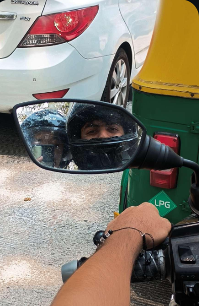

“I didn’t think today would mean anything… but somehow, it did.”
Some days don’t arrive with meaning,
they pass quietly, almost unnoticed.
But today… today lingered.
It wasn’t anything extraordinary—
no grand plans, no perfect setting,
just a simple ride, a passing moment,
lost somewhere between roads and silence.
And yet, in that quiet,
I found something I hadn’t been looking for.
I was tired, a little worn,
not quite myself—
but beside you, none of that seemed to matter.
There was no discomfort, no hesitation,
only a strange and gentle ease.
I held on, perhaps a little more than usual,
not out of need, but out of trust.
And in that closeness,
everything felt… still.
When you fell silent,
I wondered for a moment—
until I realized,
some feelings are too full for words.
Because I felt it too.
Not loudly, not all at once,
but softly, like something settling into place.
And somewhere along that quiet ride,
without asking, without knowing how—
I think I found what people mean
when they say
home isn’t a place… it’s a feeling.
And somehow,
today…
you felt like mine.
You are my home 🫀